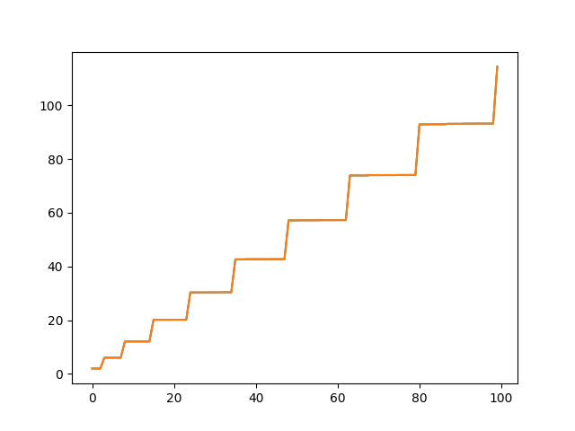
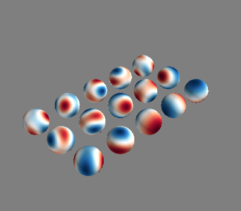
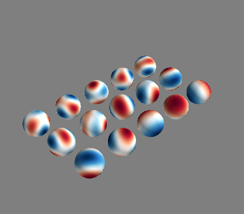

Note
Click here to download the full example code
Computation time for shiftinvert eigenvalue decomp¶
- 
- 
Out:
Calculating surface harmonics expansion...
Computing the laplacian matrix...
Computing the mass matrix...
Closed mesh or Neumann BC, leaving out the constant component
/home/rzetter/Documents/bfieldtools/examples/validation/validate_suh_shift_invert.py:25: DeprecationWarning: time.clock has been deprecated in Python 3.3 and will be removed from Python 3.8: use time.perf_counter or time.process_time instead
t0 = clock()
Calculating surface harmonics expansion...
Closed mesh or Neumann BC, leaving out the constant component
/home/rzetter/Documents/bfieldtools/examples/validation/validate_suh_shift_invert.py:27: DeprecationWarning: time.clock has been deprecated in Python 3.3 and will be removed from Python 3.8: use time.perf_counter or time.process_time instead
print("Time with shift invert:", clock() - t0)
Time with shift invert: 0.5494810000000143
0 0
1 0
2 0
3 0
4 0
0 1
1 1
2 1
3 1
4 1
0 2
1 2
2 2
3 2
4 2
/home/rzetter/Documents/bfieldtools/examples/validation/validate_suh_shift_invert.py:32: DeprecationWarning: time.clock has been deprecated in Python 3.3 and will be removed from Python 3.8: use time.perf_counter or time.process_time instead
t0 = clock()
Calculating surface harmonics expansion...
Closed mesh or Neumann BC, leaving out the constant component
/home/rzetter/Documents/bfieldtools/examples/validation/validate_suh_shift_invert.py:34: DeprecationWarning: time.clock has been deprecated in Python 3.3 and will be removed from Python 3.8: use time.perf_counter or time.process_time instead
print("Time without shift invert:", clock() - t0)
Time without shift invert: 4.220444999999927
0 0
1 0
2 0
3 0
4 0
0 1
1 1
2 1
3 1
4 1
0 2
1 2
2 2
3 2
4 2
[<matplotlib.lines.Line2D object at 0x7f9698878e90>]
import numpy as np
from bfieldtools.suhtools import SuhBasis
from mayavi import mlab
import trimesh
import matplotlib.pyplot as plt
from time import clock
# Create basis for a sphere (basis.eigenvals shere the same structure
# as spherical harmonic eigenvalues)
mesh = trimesh.creation.icosphere(4)
closed = False
basis = SuhBasis(mesh, 1)
# Choose Nc and recalculate basis with shift-invert and without
basis.Nc = 100
t0 = clock()
basis.calculate_basis(shiftinvert=True)
print("Time with shift invert:", clock() - t0)
f = mlab.figure()
basis.plot(15, figure=f)
e1 = basis.eigenvals
b1 = basis.basis
t0 = clock()
basis.calculate_basis(shiftinvert=False)
print("Time without shift invert:", clock() - t0)
b2 = basis.basis
f = mlab.figure()
basis.plot(15, figure=f)
e2 = basis.eigenvals
plt.plot(e1)
plt.plot(e2)
Total running time of the script: ( 0 minutes 4.687 seconds)